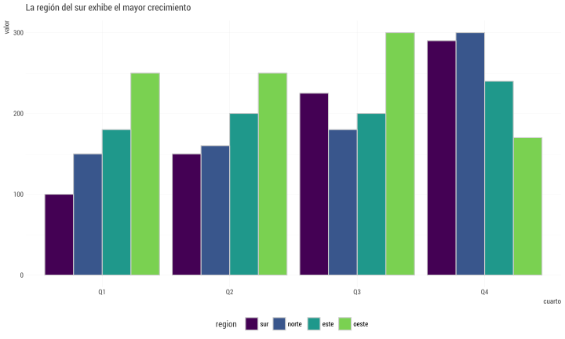
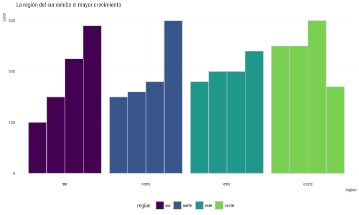
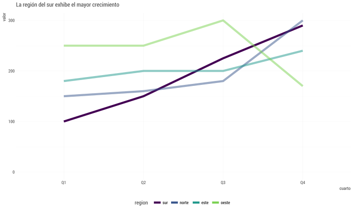

& Joshua Kunst
& Joshua Kunst
presenta
No le temas
al código
Elementos del Data Science con R
¡Holi!
Me presento
- Estadístico, data
- Escribo código para comer. Y como para escribir código
- Cofundador del meetup useRchile. Uso R, respiro R,
comovivo R - Hoy quiero ser vuestro motivador
¿Por qué?
Elementos del Data Science
en R
Datos. Cada día..
- Se generan más
- Vienen de distintas partes
- Se complejizan
- Hay que obtener conocimiento de ellos
- Se toman decisiones
Debemos Prepararnos
¿Por qué?
Elementos del Data Science
en R
Todos comenzamos
desde cierto punto
Elementos

Import & Tidy
Debemos tener la capacidad
- Integrar datos distintas fuentes
- Limpiarlos ,estandarizarlos
- Organizarlos, ordenarlos
Analisis Exploratios de Datos
Tenemos que tener la naturalidad en
- Transformar los datos de acuerdo a nuestras preguntas
- Visualizarlos. Visualización no es solo comunicar, es parte clave en el proceso de aprendizaje
- Estadística Descriptiva
- Modelar. Machine learning. En un próximo paso
Comunicar
Debemos ser claros y precisos
- Escoger la visualización que rescate de mejor manera nuestro mensaje
- Sinstenitar. No sobre saturar un gráfico o un mensaje
Ejercicio - ¿Existe el mejor gráfico?
| region | Q1 | Q2 | Q3 | Q4 |
|---|---|---|---|---|
| sur | 100 | 150 | 225 | 290 |
| norte | 150 | 160 | 180 | 300 |
| este | 180 | 200 | 200 | 240 |
| oeste | 250 | 250 | 300 | 170 |
Cual de las siguientes formas funciona mejor con el títutlo:
La región del sur exhibe el mayor crecimiento
Adapatado del tweet de Lisa Charlotte Rost que a su vez está viene del ejemplo del libro “Show me the numbers” de Stephen Few



¿Opiniones?
¿Por qué?
Elementos del Data Science
en R
Por que R/leguaje de programación/código
- Flexible. Más poderoso
- Fácil de automatizar, y organizar
- Reproductibilidad. Ayuda a detectar errores
- Gratis, codigo abierto
- R. Tiene una amistosa/cálida comunidad orientada a la enseñanza e integración. Rladies por ejemplo
- R. Fuerte en visualización
A mover
esos dedos
Estructura
- R + Rstudio: Instalación, paquetes.
- Importación y Manipulación Datos: Paquete
tidyverse. Ejercicios - Manipulación de Datos II y Exportación Datos
- Visualización
- Reportería